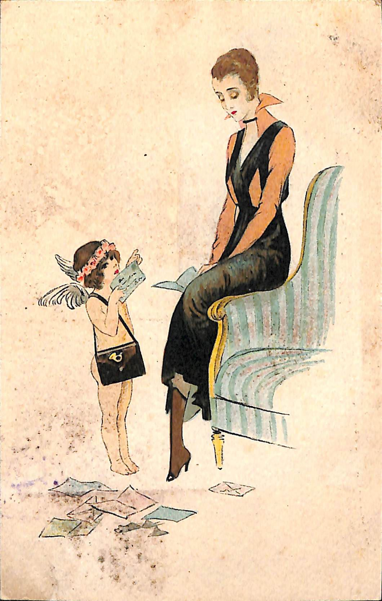
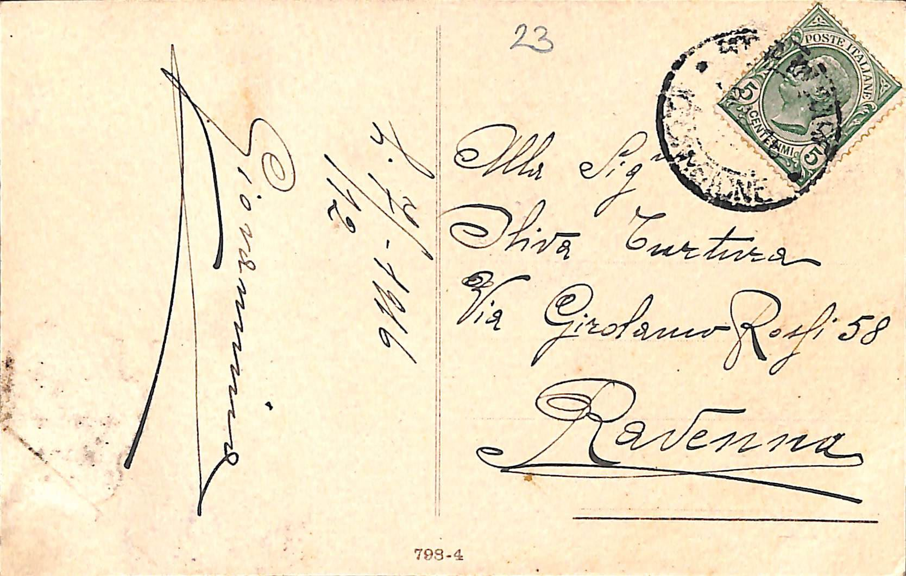
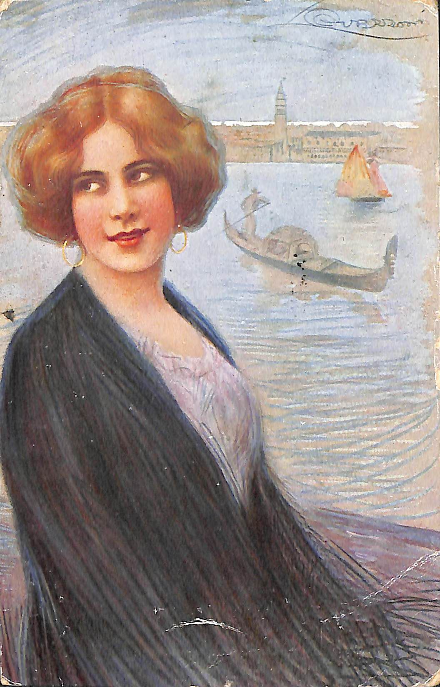
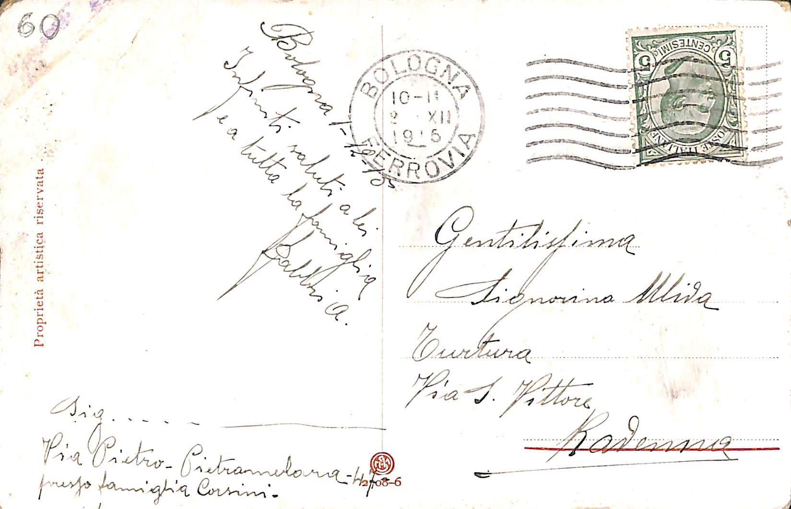

Cartoline dalla Grande Guerra
Trascritto da:
Federico Carnevale
Ente di Appartenenza:
Comune della Spezia
Codificato da:
Federico Carnevale
Compilato da:
Federico Carnevale
Responsabile scientifico:
Giacomo Paolicchi
Enrica Salvatori
Funzionario responsabile:
E. Ratti
La codifica è stata applicata su un testo scritto con caratteri dell'alfabeto latino nell'italiano
dei primi del Novecento in corsivo.
Lo scopo del progetto d'esame si colloca all'interno di un progetto più grande.
Sono state codificate varie cartoline proventienti dal periodo della Grande Guerra, conservate nel Museo
Civico Etnografico di La Spezia.
I dati si riferiscono alle informazioni ricavate dalle cartoline e da
ricerche personali ricavate dall'archivio storico-digitale dell'Università di Bologna.
Linee vuote, ritorni a capo, lettere maiuscole/minuscole e punteggiatura mantenuti.
Scritte stampate sulle cartoline e relative alla loro stampa/decorazione riprodotte
Donna legge lettera d'amore

Sul retro si trova il numero 798-4 che si riferisce al numero di serie della cartolina.
Inoltre è presente il numero 23 che identifica la cartolina nell'archivio del progetto.
Sulla base delle cartoline che abbiamo a disposizione, sappiamo con sicurezza che l'arco temporale in
cui si è tenuta la corrispondenza va dal 1911 al 1918.
Non conosciamo invece la data precisa d'inizio e di fine della stessa, dunque non sappiamo se le persone
coinvolte si siano scritte
in un periodo che precede o segue le date appena citate.
Sul retro della cartolina è presente un timbro applicato al momento del controllo ed invio da parte dell'ufficio
postale.
Presente anche il francobollo applicato da chi scrive la cartolina, probabilmente subito dopo averla scritta.
Giovanni
07/12/1916
► Descrizione Oggetto:
Cartolina Artistica
scritta
in Italiano
il 07/12/1916
►Persone coinvolte:
Nome - Cognome - Sesso - Educazione/Professione
-
Giovanni
Coliola
-
M -
Tenente Colonnello[maggiore]
-
Oliva
Turtura
-
F -
Corso di perfezionamento per i licenziati delle Scuole Normali
► Atto di corrispondenza
cartolina arrivata a Oliva Turtura
|
► Interpretazioni Editoriali
signora
sign.ra
li
il
Gentilissima
Gent.ma
|
Immagine del fronte della cartolina
Immagine del retro della cartolina con testo.
Ritratto di una donna su una gondola



► Descrizione Oggetto:
Cartolina Artistica
scritta
in Italiano
il 07/12/1916
►Persone coinvolte:
Nome - Cognome - Sesso - Educazione/Professione
-
Famiglia
Corsini
-
-
-
Oliva
Turtura
-
F -
Corso di perfezionamento per licenziati delle Scuole Normali
► Atto di corrispondenza
cartolina arrivata a Oliva Turtura
|
► Interpretazioni Editoriali
signore
sig.
san
s.
A.
|